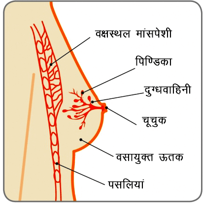
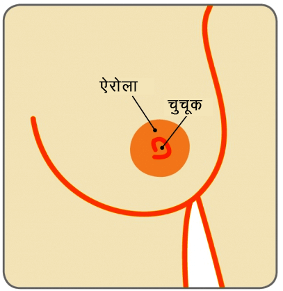

सुसाध्य स्तन स्वास्थ्य समस्याएं
जानेकोमास्टिया
एक 16 वर्ष का तरूण है, उसे बांए स्तन में एक दर्दरहित उभार महसूस हुआ जो एक वर्ष की अवधि के दौरान था और इसके कारण उसे तैराकी के दौरान समस्या का सामना करना पड़ रहा था।
भरत, एक 72 वर्ष के वृद्ध व्यक्ति हैं और उन्होने दांए स्तन में एक गांठ महसूस की जो कि छः माह की अवधि तक उन्हे रुक रुक कर परेशान करती रही।
स्तन

चूचुक

गाइनेकोमास्टिया क्या है
गाइनेकोमास्टिया पुरुष स्तन में होनेवाली वृद्धि है। यह सामान्य और सुसाध्य (कैंसर रहित) स्थिति है और मुख्य रुप से किशोरवयीन लड़कों और वृद्ध व्यक्तियों को होती है और कई बार किसी भी आयु के पुरुषों को हो सकती है। वैसे देखा जाए, तो गाइनेकोमास्टिया काफी सामान्य है, लेकिन इसके बारे में बात कम ही की जाती है क्योंकि लोग, खासकर लड़के, इसके बारे में बात करने में शर्म महसूस करते हैं। गाइनेकोमास्टिया होने के कारण कई बार किशोरवयीन लड़कों को परेशानी होती है और वे यह समझ नही पाते व चिन्ता करते रहते हैं कि उन्हे क्या हो गया है। तीन में से दो किशोरवयीन लड़कों को कुछ मात्रा में गाइनेकोमास्टिया की स्थिति का सामना करना पड़ता है और इनमें से 90% स्थितियों में यह अपने आप ठीक हो जाता है।
जानेकोमास्टिया के मुख्य कारणलड़कों में यौवनारंभ तब शुरु होता है जब वे अपनी किशोरावस्था में पहुंचते हैं। बहरहाल कुछ लड़कों में 10 वर्ष की छोटी उम्र में भी बदलाव दिखाई देते हैं। जब यौवनारंभ होता है, तब शरीर में एस्ट्रोजेन और टेस्टोस्टेरोन हारमोन के स्तर में वृद्धि होती है। एस्ट्रोजन के कारण स्तन में वृद्धि होती है और टेस्टोस्टेरोन के कारण यह वृद्धि रुक जाती है।
इसके अलावा अन्य बदलाव भी यौवनारंभ से जुड़े होते है, लड़कों में कई बार यह महसूस किया जा सजता है कि आयु बढ़ने के साथ ही उनके स्तन बढ़ रहे हैं या नाजुक हो रहे हैं। यह यौवनारंभ के कारण होता है और कई बार जब शरीर में एस्ट्रोजन की मात्रा टेस्टोस्टेरोन से अधिक होती है, तब स्तन के ऊतकों में बदलाव देखने को मिलता है। यदि एस्ट्रोजन का स्तर निरंतर टेस्टोस्टेरोन से अधिक बना रहता है, तब डक्ट और लोब्युलूज बढ़ जाते हैं, और उनकी वृद्धि दिखाई देती है।
लगभग 15 वर्ष की आयु में, टेस्टोस्टेरोन का स्तर स्थिर होने लगता है और निरंतर रुप से एस्ट्रोजन का स्तर बढ़ने लगता है। इससे एस्ट्रोजन स्तन के ऊतकों पर अपना प्रभाव और नही डाल पाता। समय के साथ जब व्यक्ति 19 वर्ष का होता है, तब उसके स्तन सामान्य रुप से सिकुडना शुरु होते हैं और चपटे हो जाते हैं।
उम्र बढ़नाजैसे ही व्यक्ति की आयु बढ़ती है, उनके शरीर में वसा की जमावट होने लगती है जिसके कारण एस्ट्रोजन उत्पन्न होता है। इसके साथ है, बढ़ती आयु में पुरुष के शरीर में टेस्टोस्टेरोन का उत्पादन कम होता है। एस्ट्रोजन का स्तर बढ़ना और टेस्टोस्टेरोन का उत्पादन कम होना, इस स्तर के फर्क के कारण स्तनों का आकार बड़ा हो जाता है। वृद्धावस्था में वजन बढ़ने से यह स्तनों के क्षेत्र में भी देखा जाता है। इसे सुडो गाइनेकोमास्टिया कहा जाता है। अनेक पुरुष इसे बढ़ती उम्र का असर मानकर स्वीकार करते हैं।
अन्य कारणकुछ दवाईयां (प्रिस्क्रिप्शन वाली और गैर कानूनी भी) के कारण भी गाइनेकोमास्टिया हो सकता है। इसमें एस्ट्रोजन भी हो सकता है, इसके कारण शरीर में हारमोन के वितरण का स्तर बढ़ जाता है अथवा यह एस्ट्रोजन के समान प्रभाव देता है। यह मुख्य रुप से कैनबिस जैसी औषधि के कारण हो सकता है। कुछ दवाईयां टेस्टोस्टेरोन के उत्पादन को ही पूरी तरह से बन्द कर देते हैं, इसके कारण टेस्टोस्टेरोन के स्तर को कम कर दिया जाता है।
विविध प्रकार की दवाईयां शरीर में हारमोन के संतुलन को बदल सकती हैं। उच्च रक्तचाप या ह्र्दय रोग संबंधी दवाईयां, कुछ मानसिक स्थितियों के लिये दी जाने वाली दवाईयां पेट में अल्सर, कुछ कैंसर के इलाज और कुछ एन्टीबायोटिक और कुछ पेशी बनाने संबंधी दवाईयां (एनाबॉलिक स्टिरॉइड्स) के कारण भी गाइनेकोमास्टिया होने की आशंका होती है।
हर्बल उत्पादकुछ हर्बल सहायक औषधियां और कुछ सौन्दर्य प्रसाधनों में एस्ट्रोजन की मात्रा होती है। वे शरीर में हारमोन के वितरण के स्तर को बढ़ा सकते हैं या शरीर को एस्ट्रोजन के समान प्रभाव दे सकते हैं, यह बच्चों और बड़ों दोनो में हो सकता है। एक बार जब आप उन्हे उपयोग में लाना बन्द कर देते हैं, तब इसका प्रभाव समाप्त हो जाता है और स्तन संबंधी ऊतक पुनः सामन्य हो जाते हैं।
आहार व वजनव्यक्ति के शरीर में जितनी अधिक वसा कोशिकाएं होंगी उतना ही वे अधिक एस्ट्रोजन बनाते हैं। इसके कारण उनके स्तनों के ऊतक भी वृद्धिगत होते हैं। एक संतुलित आहार और व्यायाम की जरुरत सही वजन बनाकर रखने के लिये होती है।
शराबबहुत ज्यादा मात्रा में शराब पीने के कारण यकृत पर प्रभाव पड़ता है और इसके कारण अनेक परिस्थितियां जन्म लेती है। शराब की अधिक मात्रा यकृत को उत्तेजित करती है, इसके कारण हारमोनल असंतुलन होता है। टेस्टोस्टेरोन का वितरण कम हो जाता है लेकिन एस्ट्रोजेन का स्तर बढ़ता है (चूंकि यकृत द्वारा वितरित होने वाले एस्ट्रोजन को तोड़ना बन्द कर दिया जाता है)। इसका अर्थ है कि स्तन के ऊतक एक बार फिर से बढ़ जाते हैं।
कई बार यह बताना असंभव हो जाता है कि किसी व्यक्ति में जाइनेकोमास्टिया का विकास क्यों होता है। बहरहाल, इसे ठीक करने के लिये जो उपचार के विकल्प हैं वे तभी काम में आ सकते हैं यदि इसका कारण पता हो।गाइनेकोमास्टिया के लक्षण क्या हैं
गाइनेकोमास्टिया के लक्षण छोटे, स्थिर वृद्धि के रुप में स्तन के ऊतकों पर, निप्पल के पीछे बड़े आकार में दिखाई देते हैं और इसके कारण स्तन स्त्रियों जैसे दिखाई देते हैं। गायनेकोएस्टिया के कारण दोनो स्तन प्रभावित हो सकते हैं। इससे प्रभावित क्षेत्र नाजुक और दर्दभरे हो सकते हैं।
सही गाइनेकोमास्टिया (जो कि स्तन के ऊतकों के बढने के कारण होता है) सूडो गाइनेकोमास्टिया से अलग होता है जो फैटी ऊतकों में वृद्धि होने के कारण होता है। बहरहाल गाइनेकोमास्टिया दोनो का मिश्रण है।
लड़कों में स्तनों का विकासस्तन के ऊतक तभी विकसित हो जाते हैं जब आप गर्भावस्था में होते हैं। इस समय में, स्तनों का विकास एक छोटी ट्यूब (डक्ट) के समान रचनाएं निप्पल के पीछे की ओर बनाते हैं। जब तक लडके अपनी किशोरावस्था और यौवनारंभ तक नही पहुंच जाते, उनके स्तन लडकियों के स्तनों के समान होते हैं। बहरहाल जब वे यौवनारंभ में पहुंचते हैं, बढ़ा हुआ हारमोन का स्तर स्तनों के अगले विकास संबंधी हारमोन के स्तर को बढ़ा देते हैं।
लडकियों में एस्ट्रोजन के कारण स्तनों का विकास होता है और दूध उत्पादन की ग्रन्थियां (लोब्युलूस) बनती है जो डक्ट के अन्त में होते हैं, जो महिला के स्तन निप्पल में दूध ला सकते हैं।
यौवनारंभ के दौरान लडकों में भी एस्ट्रोजेन की मात्रा काफी अधिक होती है लेकिन उनकी किशोरावस्था खत्म होते हुए उनमें टेस्टोस्टेरोन की मात्रा बढ़ने लगती है। इसके कारण एस्ट्रोजेन का प्रभाव बन्द हो जाता है जो कि स्तन के ऊतकों पर होता है और सामान्य रुप से स्तन चपटे हो जाते हैं।
गाइनेकोमास्टिया का निदान कैसे करें
स्पेशलिस्ट द्वारा क्लिनिकल स्तन परीक्षण किया जाता है और दोनो स्तनों का अल्ट्रासाउन्ड करना आवश्यक होता है। प्रारंभिक परीक्षण के आधार पर स्पेशलिस्ट द्वारा मेमोग्राम (स्तनों का एक्स रे) करने की सलाह भी दी जा सकती है, खास तौर पर यदि रोगी वृद्ध व्यक्ति है, और इसमें नीडिल बायोप्सी भी जरुरी हो सकती है (एफएनएसी/कोर निडिल बायोप्सी)।
चूंकि गाइनेकोमास्टिया किसी अन्य परिस्थिति का लक्षण भी हो सकता है, जैसे हायपरथायरायडिज्म (थायराइड ग्रन्थि का अधिक सक्रिय होना) इसलिये स्पेशलिस्ट गले का परीक्षण भी करना चाहेंगे साथ ही पेट और अन्डकोष का भी। रक्त की जांच जिससे यकृत के कार्य को जाना जा सके, अल्फा फीटो प्रोटीन और बीटा-एचसीजी करने की भी आवश्यकता हो सकती है।
गाइनेकोमास्टिया का उपचार क्या है
अधिकांश स्थितियों में, सही प्रकार से सांत्वना देने की आवश्यकता होती है। इसके लिये कोई विशेष इलाज की सिफारिश नही की जाती। कुछ लोगों के लिये, गाइनेकोमास्टिया संबंधी इस लक्षण को दूर करना (जैसे दवाईयों में बदलाव, शरीर के अतिरिक्त वसा को कम करना, शराब की मात्रा कम करना) ही आवश्यक उपाय होते हैं जिससे स्तन के अतिरिक्त ऊतक सिकुड जाते हैं। कुछ व्यक्तियों को चिकित्सकीय उपचार (डेन्झोल/टेमोक्सिफिन) कुछ समय के लिये लेने की आवश्यकता हो सकती है जो कि स्पेशलिस्ट तय करते हैं।
सामान्य रुप में, शल्यक्रिया सिर्फ तभी की जाती है यदि गाइनेकोमास्टिया जीवनशैली के बदलाव या चिकित्सकीय इलाज के चलते हुआ हो, अथवा लंबे समय तक बने रहने के कारण जीवन की गुणवत्ता को प्रभावित कर रहा हो।
स्पेशलिस्ट द्वारा किसी भी शल्यक्रिया को करने से पहले उसके जोखिम की पडताल करनी चाहिये क्योंकि गाइनेकोमास्टिया की शल्यक्रिया सरल नही है। किस प्रकार की शल्यक्रिया की जानी है, यह पूरी तरह से गाइनेकोमास्टिया के आकार और त्वचा के अतिरिक्त भाग की उपलब्धता पर निर्भर करता है। इसका लक्ष्य होता है कि पुरुषों के वक्ष के आकार को पुनः सामान्य किया जाए और कई बार इसमें एक से ज्यादा शल्यक्रिया शामिल हो सकती है।
लाइपोसक्शन (एक शल्यक्रिया की प्रक्रिया जिसमें प्रभावित क्षेत्र से वसा को निकाला जाता है) इसके लिये सबसे सामान्य प्रक्रिया है। इससे या तो गाइनेकोमास्टिया अपने आप ही ठीक हो जाता है अथवा इसके लिये स्तन के आकार को कम करने की शल्यक्रिया की जाती है (इसे रिडक्शन मेमोप्लास्टी कहते हैं)। स्तन के आकार को कम करने का काम भी लिपोसक्शन के द्वारा किया जा सकता है। चूंकि ये सभी प्रक्रियाएं कोई ना कोई अनसुलझा मुद्दा छोड़ती ही है, इसलिये गाइनेकोमास्टिया फिर से हो सकता है।
जाइनेकोमास्टिया जिसे भी होता है, उसके लिये एक तनावपूर्ण, शर्मनाक और अकेला कर देने वाला अनुभव होता है। यौवनारंभ के दौर से गुज़र रहे लड़के जो पहले से ही शारीरिक परिवर्तनों का अनुभव करते हैं, उन्हे अपने स्तन के आकार बढ़ने या उसमें दर्द होने जैसी स्थिति को किसी के साथ चर्चा में लाना कठिन होता है। परिणामस्वरुप, किशोरवयीन लड़के यह नही जान पाते कि यह स्थिति कितनी सामान्य है। वृद्ध पुरुष अपने शरीर में बदलाव और स्तन की इस स्थिति को कैंसर का लक्षण समझ लेते हैं।
जाइनेकोमास्टिया होने के कारण स्तन कैंसर का जोखिम नही होता। बहरहाल, पुरुषों के लिये भी अपने स्तन के बारे में जागरुक होने की आवश्यकता है और यदि स्तन में किसी प्रकार का परिवर्तन आता है, तब इस बारे में स्पेशलिस्ट को बताया जाना चाहिये।.
स्तन जागरुकता के 5 बिन्दु कोड